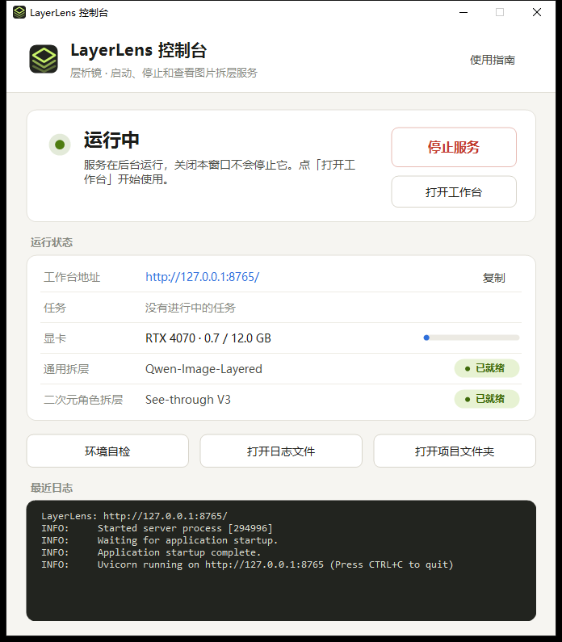

01三分钟上手
第一次使用按下面四步走。日常使用只需要第 1 步和第 4 步。
STEP 1双击打开控制台顶层的 LayerLens 控制台.lnk（带项目 Logo，随项目自带，放在哪个文件夹都能用）。万一快捷方式丢失，先双击一次 scripts\LayerLens 控制台.cmd，它会自动补出来。
STEP 2点「启动服务」第一次会自动安装依赖、构建页面，需要几分钟；以后十几秒就好。
STEP 3点引擎旁的「安装」只在第一次需要。会打开一个窗口自动下载，可以只装一个引擎。
STEP 4点「打开工作台」浏览器打开后，点右上角「新建任务」上传图片。
开始前需要准备
| 软件 | 说明 |
|---|---|
| Python 3.11 或更高 | 运行后端。安装时勾选 Add python.exe to PATH。 |
| Node.js 20.19 或更高 | 第一次启动时构建工作台页面，之后不再需要。 |
| NVIDIA 显卡驱动 | 拆层推理需要。没有 NVIDIA 显卡也能打开工作台，查看和导出已有结果。 |
| Git | 只有安装「二次元角色拆层」时需要。 |
缺哪一样，控制台会在启动或安装时直接提示，不用提前逐个检查。
02控制台
控制台负责启动和停止服务，并显示服务、任务、显卡和引擎的状态。所有操作都可以在这里点按钮完成，不需要打开命令行。

- 状态和主按钮大字是当前状态，下面一行告诉你下一步做什么。右边的大按钮随状态变成「启动服务」「停止服务」「取消启动」或「重新启动」。点下去后按钮和状态图标会转圈，转完就有结果，期间窗口照常可以拖动。
- 打开工作台服务运行后可点，在默认浏览器里打开
http://127.0.0.1:8765/。 - 运行状态工作台地址（右侧「复制」可复制到剪贴板）、正在处理和排队的任务及进度条、显卡和显存占用条、两个引擎的状态。引擎右侧的标签显示「已就绪」「正在推理」或「安装中」，没装的引擎会出现「安装」。文字太长被截断时，鼠标停在上面可以看到全文。
- 工具按钮「环境自检」检查显卡、内存、磁盘和引擎；「打开日志文件」用记事本查看完整日志；「打开项目文件夹」。
- 最近日志服务的最新输出。启动失败时，错误原因会显示在这里。
状态说明
带转圈图标的是过渡状态，等它结束即可，不用重复点击。
| 状态 | 意思和处理 |
|---|---|
| 正在检查 | 控制台刚打开，正在确认服务是否已经在运行，一两秒后显示结果。 |
| 已停止 | 服务没有运行。点「启动服务」。 |
| 正在启动 | 正在准备，标题旁显示已用的秒数。第一次需要几分钟，进度看下方日志。等不及可以点「取消启动」。 |
| 运行中 | 可以使用。显示「运行中 · 未安装引擎」时，点引擎旁边的「安装」。 |
| 正在停止 | 正在结束服务和正在运行的推理进程，通常几秒内完成。 |
| 启动失败 | 启动脚本出错退出，会显示退出码。看日志里的错误，常见原因是缺 Python 或 Node.js、网络中断。处理后点「重新启动」。 |
| 运行异常 | 服务开着，但处理任务的后台进程停了。点「重新启动」。 |
| 端口被占用 | 有其他程序在用 8765 端口，主按钮显示「无法启动」。关掉那个程序后，状态会自动恢复。 |
停止和关闭
- 服务在后台运行，关闭控制台窗口不会自动停止服务。服务运行时关闭窗口会弹出确认框：「仅关闭控制台」让服务继续在后台运行（默认按钮，直接按回车就是它），「停止服务并退出」先停服务再退出，「取消」回到控制台。按 Esc 等同于取消。
- 正在启动或停止时不能关闭窗口，等转圈结束再关。
- 还有任务在处理或排队时点「停止服务」，会先弹出确认框，写明正在处理和排队的个数。确认停止后，正在处理的任务记为中断，之后可以在任务中心重试。
- 8765 端口被其他程序占用时，控制台不会去结束那个程序，只提示「无法停止」。
- 控制台只能打开一个。再双击时会把已经打开的窗口切到前面。
- 双击入口是顶层的「LayerLens 控制台.lnk」（带项目 Logo，随项目自带，内部用相对路径记录位置，项目文件夹放在哪里都能用）；等效的 .cmd 在
scripts\里，快捷方式丢失时双击它会自动补出来。资源管理器中 .cmd 的图标由 Windows 按文件类型统一配、单个文件改不了，所以用快捷方式承载 Logo。想往桌面也放一个、或修复桌面快捷方式的路径：运行scripts\New-ConsoleShortcut.ps1（加-Desktop放桌面；桌面快捷方式记录绝对路径，项目文件夹搬家后重跑一次即可）。 - 引擎安装窗口开着时再点「安装」，会切到那个窗口，不会重复安装。
- 服务的完整输出保存在
data\logs\server.log，每次启动重新开始记录。
03安装推理引擎
拆层由推理引擎完成。引擎体积大、和显卡有关，所以不放在项目里，每台电脑第一次使用时安装一次。
通用拆层
Qwen-Image-Layered · GGUF Q4_K_M
- 适合
- 海报、商品图、插画、场景、摄影
- 输出
- 3–8 个透明图层，原图比例，可对单层再细拆
- 下载
- 约 28 GB，占用磁盘约 41 GB
- 内存
- 32 GB 以上
二次元角色拆层
See-through V3
- 适合
- 二次元角色立绘
- 输出
- 约 17–23 个部位图层，附深度 PSD，可左右 / 前后拆分
- 下载
- 约 13 GB，占用磁盘约 21 GB
- 内存
- 16 GB 以上
两个引擎互不依赖，按自己的图片类型装一个即可。
怎么装
- 先启动服务控制台显示「运行中」后，没装的引擎右边会出现蓝色的「安装」。
- 点「安装」，确认下载大小会打开一个 PowerShell 窗口自动安装。安装期间工作台照常可用。
- 等窗口显示“安装完成”时间取决于网速。中途断网或关掉窗口都没关系，再点一次「安装」会接着下载，已经下好的文件不会重下。
- 刷新浏览器控制台里该引擎变成「已就绪」，新建任务时就可以选它了。
安装窗口依次做这些事，已经完成的步骤会自动跳过：
| 步骤 | 说明 |
|---|---|
| 检查显卡、Git、uv | uv 用来准备 Python 3.12 环境，没有时会自动安装 |
| 创建独立环境 | 每个引擎一个独立的 Python 环境，互不影响 |
| 拉取上游代码 | 仅二次元角色拆层 |
| 安装依赖 | PyTorch（CUDA 12.6）和固定版本的推理库，约 3 GB |
| 下载并校验权重 | 逐个文件核对；通用拆层还会用显卡生成一次文本编码器 |
| 自检 | 确认引擎可以使用 |
网络慢或下载失败
- 权重默认依次尝试 hf-mirror.com、huggingface.co、ModelScope，一个不通会自动换下一个。
- 需要代理时，在命令行里先设置
$env:HTTPS_PROXY = 'http://127.0.0.1:7890'，再运行.\scripts\setup-engine.ps1 -Engine qwen。 - C 盘空间不够，可以把模型目录放到其他磁盘，方法见 docs/engines.md 的“把权重放到其他磁盘”。
04使用工作台
从上传图片到拿到 PSD，一般是下面五步。
- 点右上角「新建任务」，上传图片支持 PNG、JPEG、WebP、BMP，单张最多 32 MiB。一次可以选 2–20 张作为一个批次。
- 选择引擎和参数通用拆层默认 5 层、30 步，图层数用滑块调。3–5 层最稳；6 层以上会占满显存、明显变慢，提交前会再确认一次。画面描述可以留空，模型会自己生成。
- 在任务中心等待任务按顺序逐个处理，进行中的行会显示进度。以 RTX 4070 12 GB 为参考，通用拆层单张约 9 分钟，二次元角色拆层 1024 px 约 6 分钟。控制台里也能看到当前进度。
- 打开工作台查看结果选中、隐藏、独显图层，调整透明度，对比原图，查看透明蒙版。
- 导出右侧可以下载完整 PSD、按层 PNG 的 ZIP，或导出当前画面的合成 PNG。
移动图层在「分层合成」视图按 V，拖动图层调整位置；Shift 锁定方向，方向键每次 1 px（按住 Shift 10 px）。
平移与缩放按 H 或按住空格拖动画布；Ctrl + 滚轮缩放，Ctrl + 0 复位。
撤销Ctrl + Z 撤销，Ctrl + Shift + Z 重做。拖动中按 Esc 取消。
位置调整只影响合成 PNG。PSD 和 ZIP 始终保持模型输出的原始坐标，浏览器里的调整不会改动结果文件。
对单个图层再拆一次
- 通用拆层：选中一层，用「递归细拆此层」拆成 2–4 个子层，作为新任务排队，子层原位替换该层。整幅半透明的色调层还原不了，会被拒绝并保留原层。
- 二次元角色拆层：把部位按左右拆分，或按前后（深度）拆分，一次最多 32 个图层。
05常见问题
| 现象 | 处理 |
|---|---|
| 双击控制台没有反应 | 第一次打开要等几秒。仍没有窗口时，在项目文件夹打开 PowerShell，运行 powershell -ExecutionPolicy Bypass -STA -File scripts\control-panel.ps1，窗口里会显示错误原因 |
| 点「启动服务」提示没有找到 Python 或 Node.js | 按提示安装后，关掉控制台重新打开 |
| 新建任务里引擎显示「未安装」 | 在控制台点该引擎旁的「安装」，装好后刷新浏览器 |
| 任务失败，原因是显存不足 | 关闭其他占用显卡的程序（游戏、视频剪辑等）；二次元角色拆层改用 1024 px，通用拆层减少图层数 |
| 通用拆层运行时电脑很卡 | 处理期间会占用约 24–25 GB 内存。任务管理器里的「共享 GPU 内存」是普通内存，不是显存溢出。可用内存不足约 28 GB 时不要提交 |
| 安装时下载失败或校验失败 | 再点一次「安装」会续传；反复失败时换网络或设置代理 |
| 想知道到底缺什么 | 在控制台点「环境自检」，会逐项列出显卡、内存、磁盘和引擎的情况 |
06交给 Agent 处理
遇到控制台解决不了的问题，可以在项目文件夹里打开 Claude Code、Codex 等编码助手，把下面的提示词复制过去。Agent 会先读 CLAUDE.md 或 AGENTS.md 了解项目约定。
首次配置从零把工作台和一个引擎装好
请帮我在这台 Windows 电脑上配置 LayerLens。 1. 先读 CLAUDE.md 和 docs/engines.md，运行 python scripts\doctor.py，告诉我显卡、内存、磁盘是否满足要求，缺什么。 2. 运行 .\Start-LayerLens.ps1 启动服务，确认 http://127.0.0.1:8765/ 能打开。缺 Python 或 Node.js 时先告诉我，不要自行安装系统软件。 3. 安装「通用拆层」引擎：.\scripts\setup-engine.ps1 -Engine qwen。下载量约 28 GB，开始前先跟我确认磁盘位置；网络失败时按 docs/engines.md 的「网络与下载源」处理。 4. 装好后再运行一次 doctor.py，并用 /api/v1/capabilities 确认 qwen 的 ready 为 true。 5. 最后告诉我做了哪些事、哪些步骤被跳过、还有什么需要我手动处理。以后我会用顶层「LayerLens 控制台.lnk」（或 scripts\LayerLens 控制台.cmd）启动和停止服务。 不要删除或改写 data/jobs/ 和 data/cache/models/ 里已有的文件。
排查启动失败或引擎不可用控制台显示启动失败、运行异常，或任务一直失败时
LayerLens 用不了，请帮我排查。控制台显示的状态是：<填写，比如「启动失败」或「运行异常」>。 1. 先看 data\logs\server.log 和 data\logs\server.err.log 的最后部分，再运行 python scripts\doctor.py。 2. 服务能打开时，读取 /api/v1/capabilities 中每个引擎的 ready、missing、missing_parts 和 worker_alive。 3. 如果是任务失败，打开 data/jobs/<任务 ID>/engine.log 查看原因（没有任务 ID 就从 /api/v1/task-center?filter=issues 找最近失败的）。 4. 按 docs/engines.md 的「常见问题」判断原因，告诉我结论和建议，等我确认后再执行会改动环境或重新下载的操作。 5. 重启服务前，先确认 /api/v1/task-center?filter=active 没有运行中的任务。
迁移到另一台电脑复用已下载的权重，避免重复下载
我要把 LayerLens 搬到这台新电脑，旧电脑上的 data/cache/models 已经复制到了 <填写路径>。 1. 读 CLAUDE.md 和 docs/engines.md。 2. 把权重放到项目的 data/cache/models（或建目录联接指过去），不要重新下载已有文件。 3. 分别运行 .\scripts\setup-engine.ps1 -Engine qwen 和 -Engine seethrough，让脚本只补环境和依赖，并逐个校验已有权重。 4. 运行 doctor.py，启动服务，各提交一个小任务（通用拆层 4 层 20 步，二次元角色拆层 1024 px），完成后用 scripts\verify_exports.py <任务 ID> 校验导出。 5. 汇总耗时和显存峰值，和 docs/architecture.md 里的 RTX 4070 参考基线对比。
升级模型版本上游发布了新提交或新权重时
请评估并升级 LayerLens 的 <Qwen-Image-Layered / See-through> 引擎到 <新版本或 revision>。 1. 版本号只在 engine/adapter/catalog.py 和对应的 requirements-*.txt 里修改，同时更新 docs/engines.md。 2. 在独立环境里重新运行 setup-engine.ps1，不要影响另一个引擎。 3. 用 docs/architecture.md 里同样的样图和参数重新测显存峰值、耗时和导出结果，scripts/bench/ 里有测量脚本。 4. 显存超过参考基线或结果变差时，不要开放新参数，先把对比数据给我看。 5. 改完后跑后端测试，并按 CLAUDE.md 的要求保持 CLAUDE.md 与 AGENTS.md 一致。
07命令行与文件位置
控制台能做的事，命令行都能做。适合习惯终端的用户或自动化脚本。在项目文件夹打开 PowerShell：
.\Start-LayerLens.ps1 # 在当前窗口运行服务，Ctrl+C 停止 .\scripts\setup-engine.ps1 -Engine qwen # 安装通用拆层（seethrough 为二次元角色拆层） python scripts\doctor.py # 环境自检 .\scripts\control-panel.ps1 -Port 9000 # 用其他端口打开控制台
提示「禁止运行脚本」时，先执行
Set-ExecutionPolicy -Scope CurrentUser RemoteSigned。双击控制台不受这个限制。| 路径 | 内容 |
|---|---|
| LayerLens 控制台.lnk | 顶层双击入口，带项目 Logo，随项目自带（相对路径） |
| scripts\LayerLens 控制台.cmd | 备用双击入口，与快捷方式等效 |
| 使用指南.html | 本指南 |
frontend/ backend/ | 工作台页面和后端服务 |
engine/adapter/ | 引擎适配代码；catalog.py 记录所有固定版本 |
scripts/ | 控制台、安装、自检、导出校验和测量脚本 |
.local/ | 后端和各引擎的 Python 环境，可删除后重装 |
data/logs/ | 服务日志 |
data/jobs/ | 任务记录、上传的图片和结果。不要手动删除，请在任务中心用回收站清理 |
data/cache/models/ | 模型权重，删除后需要重新下载 |
更多细节：engines.md 引擎安装 · architecture.md 架构与显存基线 · api.md 接口与运维 · handoff.md 开发交接。